Actual native rendering from the admitted 155-record subset. The video is a simulation of the October 25, 2026 morning pass at 10:22 UTC / 06:22 EDT, at native 1× speed. It is not the observing sky at the current instant. No above-horizon subset object was sunlit at the independently checked current UTC.
NORAD 61045 / SPACEMOBILE-003. Approximately eight seconds of actual native-canvas video; fixed camera, no selected or locked object, ordinary 120° FOV. The point begins near the center and moves against the stars. This target uses native default photometry; brightness is modeled.
Open Live Sky · Open paused pass selection
155 original fresh TLE pairs; no full-catalog claim. USSPACECOM / 18 SDS basic GP data via CelesTrak, transported through the pinned caelo-works/tle-mirror revision. Source integrity is verified; whole-file first-party authentication and absolute-position precision remain limitations.
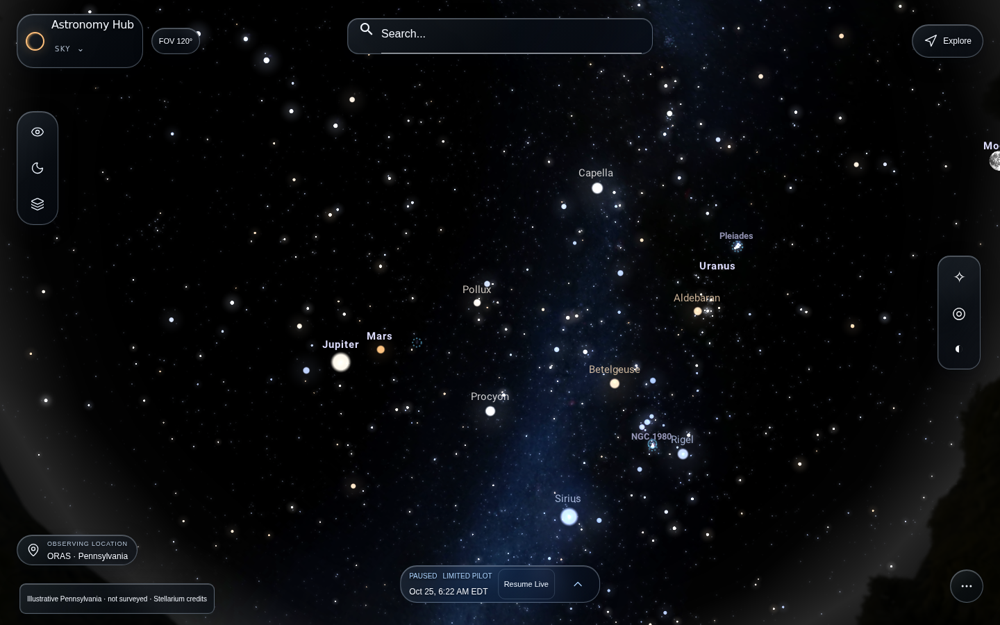
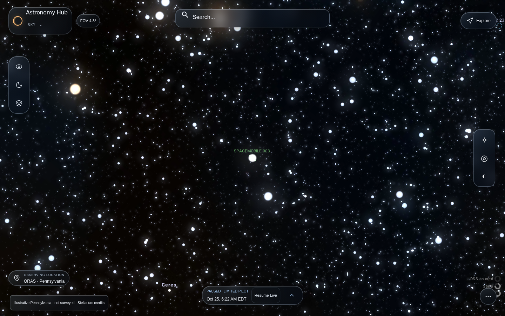
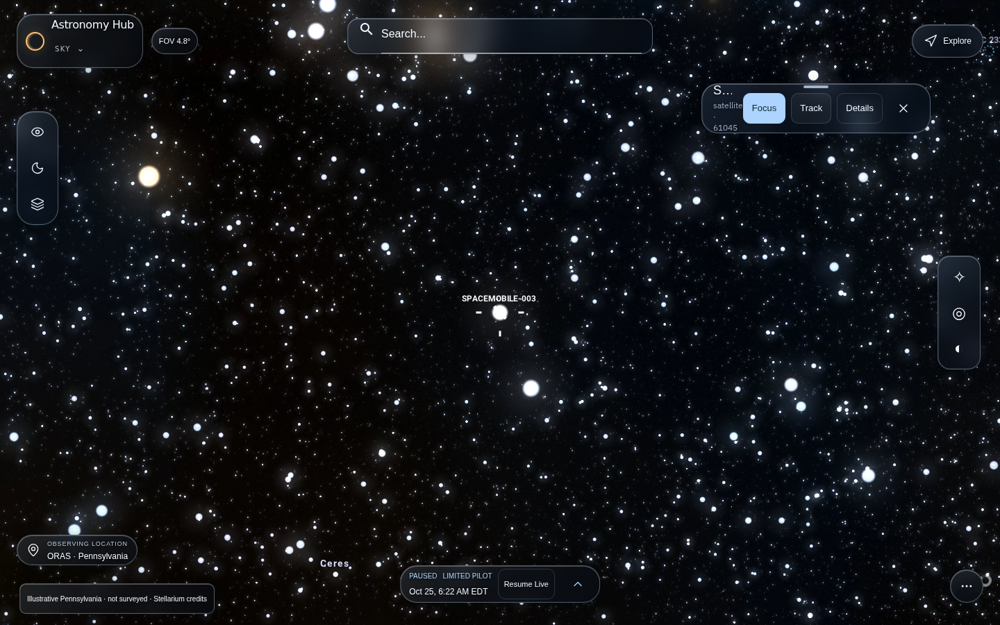
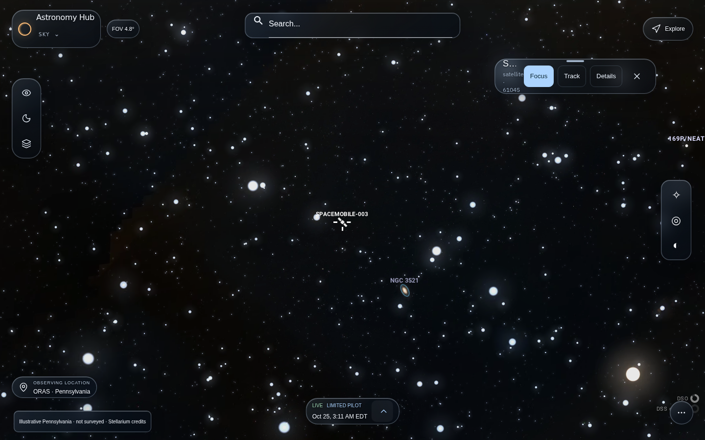
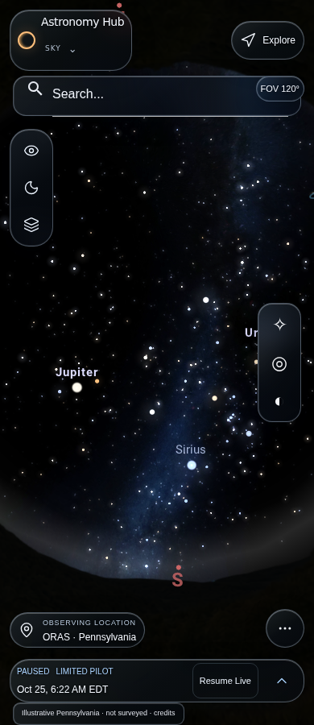
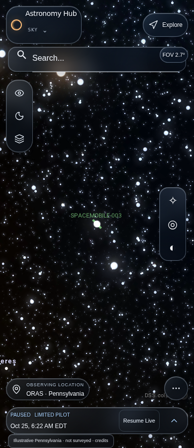
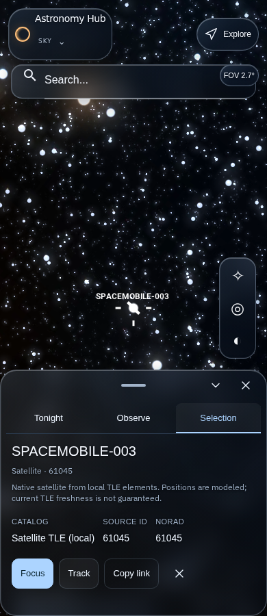
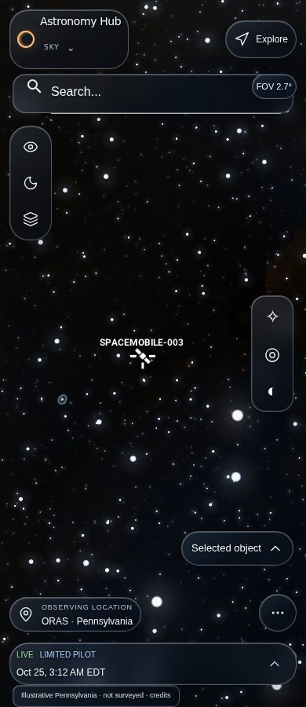
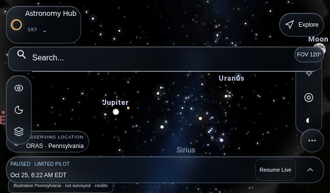
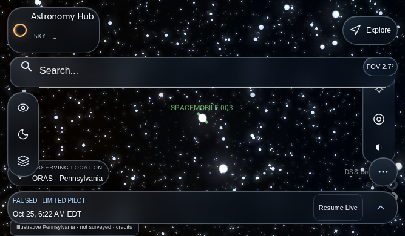
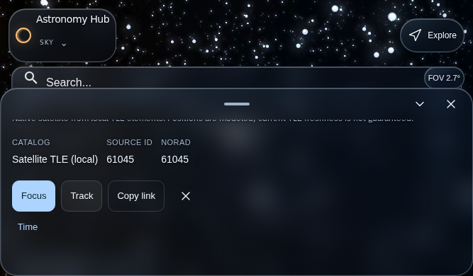
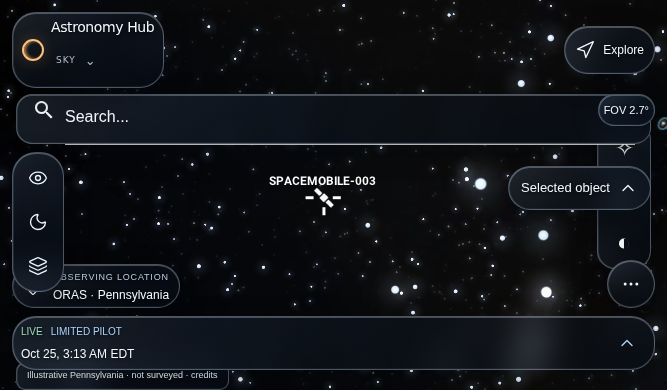
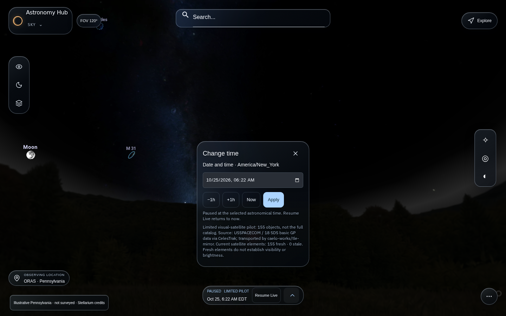
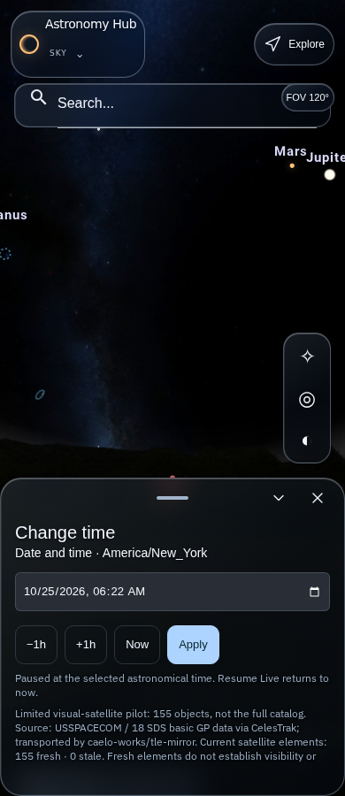
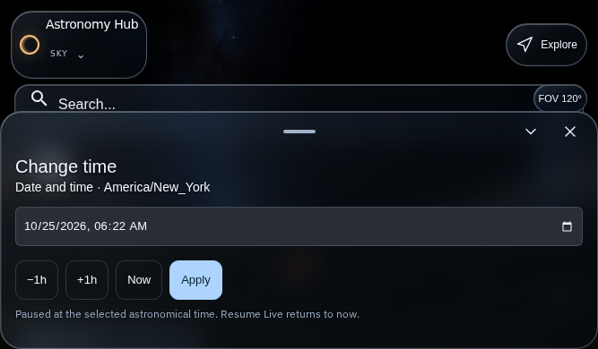
Images preserve original captured bytes. Browser software rendering and mobile emulation do not qualify physical devices. No merge or production deployment.